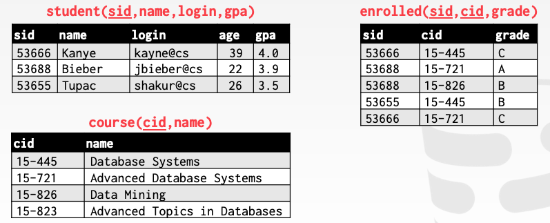
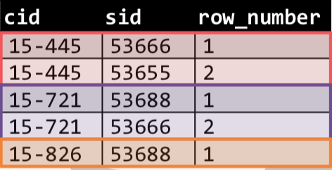

高级 SQL
关系语言
用户只需要指定他们想要的答案，不需要指定如何计算。
DBMS 负责对查询进行高效评估如何处理。查询优化器重新对操作排序，乘车查询计划。
SQL 历史
最初来自 IBM 的 System R 原型。Structured English Query Language，19世纪70年代被 Oracle 采用。
IBM 在1983年发布了 DB2。
1986年 ANSI 标准。1987年 ISO 标准。Structured Query Language
当前标准 SQL:2016
- SQL:2016 JSON, 多态表
- SQL:2011 临时 DB，Pipelined DML
- SQL:2008 TRUNCATE，Fancy ORDER
- SQL:2003 XML，windows，sequences，自动生成 ID
- SQL:1999 Regex，触发器，OO
大部分 DBMS 至少支持 SQL-92。
各种数据库系统的比较：http://troels.arvin.dk/db/rdbms/
关系语言分类
DML：数据操作语言
DDL：数据定义语言
DCL：数据控制语言
还包括：视图定义；完整性和参考约束；事务
重要的：SQL 基于 bags（有重复元素）而不是 sets（无重复元素）。
示例数据库

聚集函数
从一些元组返回单个值的函数：
- AVG(col)
- MIN(col)
- MAX(col)
- SUM(col)
- COUNT(col)
聚集函数只能用在 SELECT 输出列表中。
获取 '@cs' 登陆的所有学生：
SELECT COUNT(login) AS cnt
FROM student WHERE login LIKE '%@cs';
SELECT COUNT(login) AS cnt
FROM student WHERE login LIKE '%@cs';
SELECT COUNT(1) AS cnt
FROM student WHERE login LIKE '%@cs';
获得 '@cs' 登陆的所有学生的总数和平均 GPA：
SELECT COUNT(sid), AVG(gpa)
FROM student WHERE login LIKE '%@cs';
DISTINCE
COUNT, SUM, AVG 支持 DISTINCT。
获得 '@cs' 登陆的唯一的学生数量：
SELECT COUNT(DISTINCT login)
FROM student WHERE login LIKE '%@cs';
其它列
在聚集外输出其它列的行为是未定义的。
获得选择没门课程的学生的 GPA 平均分(PG 上执行报错)：
SELECT AVG(s.gpa), e.cid
FROM enrolled AS e, student AS s
WHERE e.sid = s.sid;
GROUP BY
将元组分成子集，对每个子集计算聚集。
SELECT AVG(s.gpa), e.cid
FROM enrolled AS e, student AS s
WHERE e.sid = s.sid
GROUP BY e.cid;
在 SELECT 输出子句中的非聚集列必须出现在 GROUP BY 子句中。
HAVING
基于聚集计算结果过滤结果。对 GROUP BY 的过滤。
SELECT AVG(s.gpa) AS avg_gpa, e.cid
FROM enrolled AS e, student AS s
WHERE e.sid = s.sid
GROUP BY e.cid
HAVING avg_gpa > 3.9;
字符串操作
| DB | String Case | String Quotes |
|---|---|---|
| SQL-92 | Sensitive | Single |
| Postgres | Sensitive | Single |
| MySQL | Insensitive | Single/Double |
| SQLite | Sensitive | Single/Double |
| DB2 | Sensitive | Single |
| Oracle | Sensitive | Single |
WHERE UPPER(name) = UPPER('KaNyE') -- SQL-92
WHERE name = "KaNyE" -- MySQL
LIKE 用来做字符串匹配。% 匹配任意子串；_ 匹配任意单字符。
SQL-92 定义了字符串函数。许多 DBMS 有自己的函数。
字符串函数可以被用在输出和谓语中：
SELECT SUBSTRING(name,0,5) AS abbrv_name
FROM student WHERE sid = 53688
SELECT * FROM student AS s
WHERE UPPER(e.name) LIKE 'KAN%'
SQL 标准定义 使用 || 操作符来连接两个或多个字符串。
name || '@cs' -- SQL-92
nmae + '@cs' -- MSSQL
CONCAT(name, '@cs') -- MySQL
时间/日期操作
对 DATE/TIME 属性操作和修改。
可以在输出和谓词中使用。
支持范围和语法范围变化很大。
输出重定向
将查询结果保存到另一张表中。
- 表必须未定义。
- 表将与输入有相同的列（个数相同，类型相同）
SELECT DISTINCT cid INTO CourseIds -- SQL-92
FROM enrolled;
CREATE TABLE CourseIds (
SELECT DISTINCT cid FROM enrolled); -- MySQL
将查询结果插入到另一张表中
- SELECT 结果必须与目标插入表的列相同。
- DBMS 对于重复元组有不同的选项/语法。
INSERT INTO CourseIds
(SELECT DISTINCT cid FROM enrolled);
输出控制
ORDER BY
LIMIT
查询嵌套（子查询）
查询中包含其它查询。通常很难优化。
内部查询可以出现在几乎任何地方。
SELECT name FROM student WHERE -- 外部查询
sid IN (SELECT sid FROM enrolled) -- 内部查询
- ALL：对于子查询的所有行必须满足表达式
- ANY：对于满足至少一行
- IN：与 =ANY() 等价
- EXITS：返回至少一行
窗口函数
SELECT cid, sid,
ROW_NUMBER() OVER (PARTITION BY cid)
FROM enrolled ORDER BY cid;

CTE
CTE：Common Table Expressions
打印1~10序列：
WITH RECURSIVE cteSource(counter) AS (
(SELECT 1)
union all
(SELECT counter + 1 FROM cteSource WHERE counter < 10)
)
SELECT * FROM cteSource;
结论
SQL 不是一门死板的语言。
你通常需要尽力用一行 SQL 语言来计算你的结果。